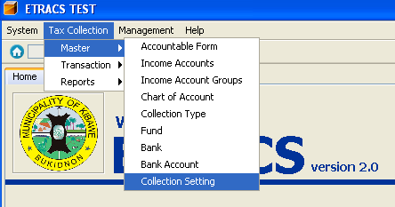
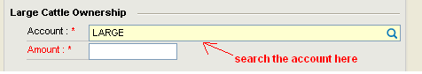
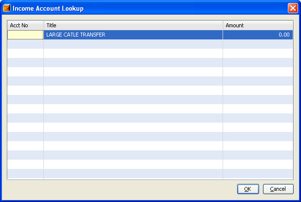
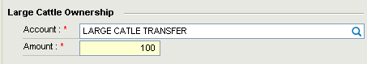

Managing Collection Settings
This facility enables you to set up the account and amount information for collection transaction.
How to set up the account and amount information?
1. On the menu toolbar, go to "Tax Collection -> Master -> Collection Setting" item.

2. Type atleast first three letters of the word to search the account.

3. Select the account from the list, and click on the "OK" button or press [Enter].

4. Specify the amount.

5. Do the same process for the remaining three accounts (Large Cattle Transfer, Marriage License Fee, Burial Permit and Fee).
6. Click on the "Save" button or press [Ctrl+S].